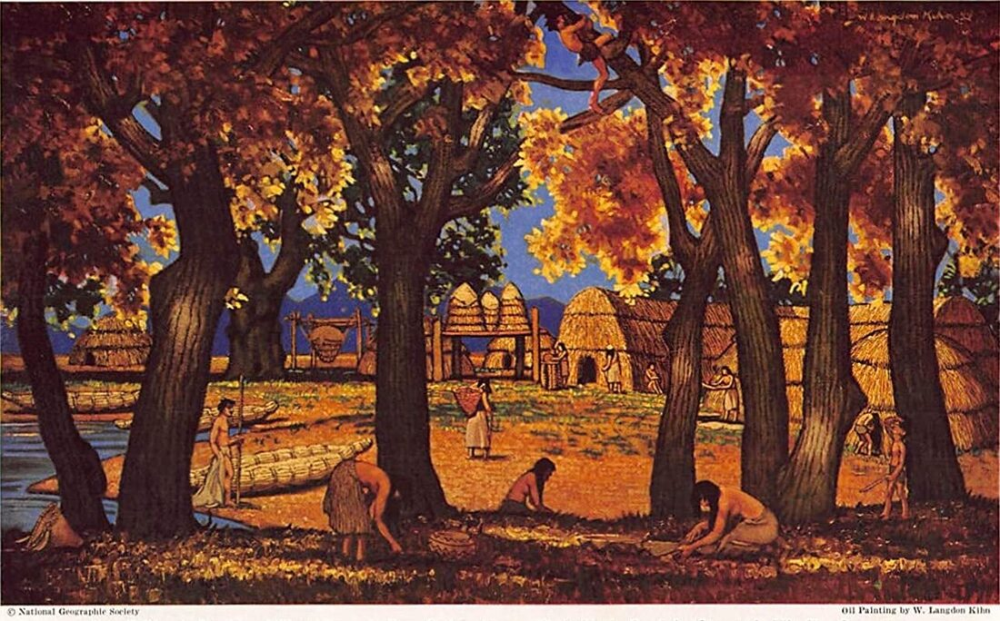
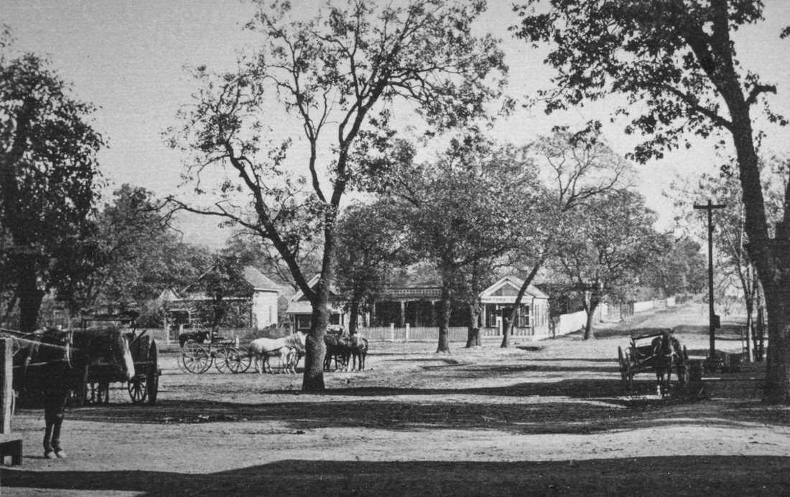
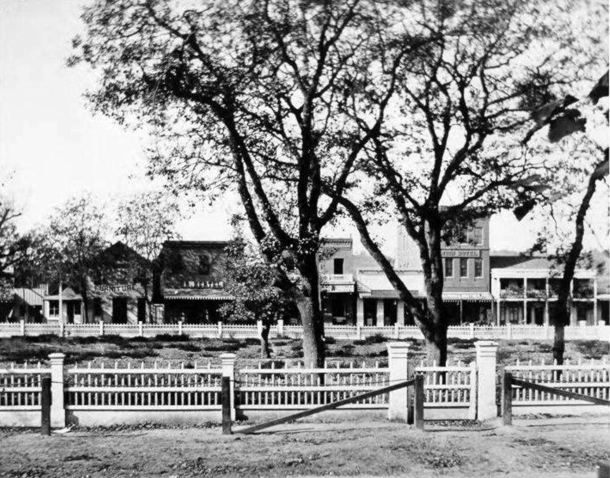
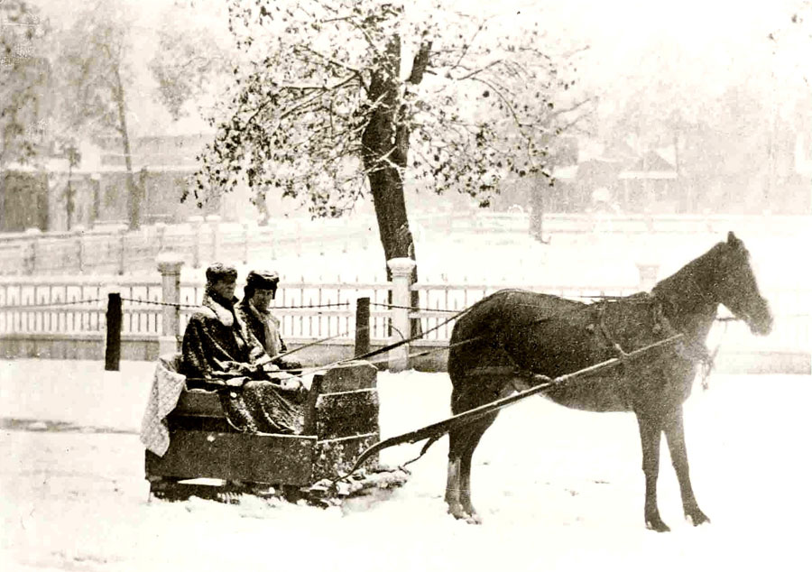
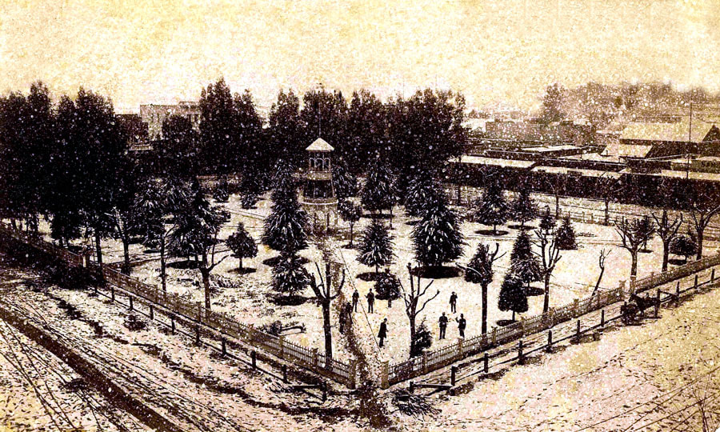
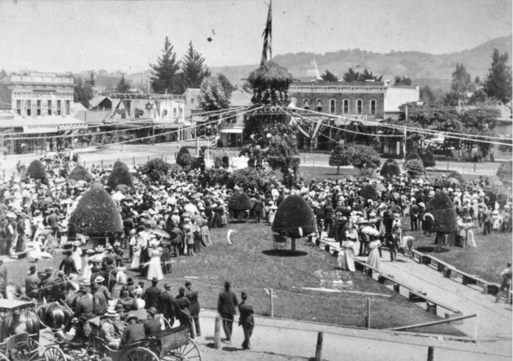
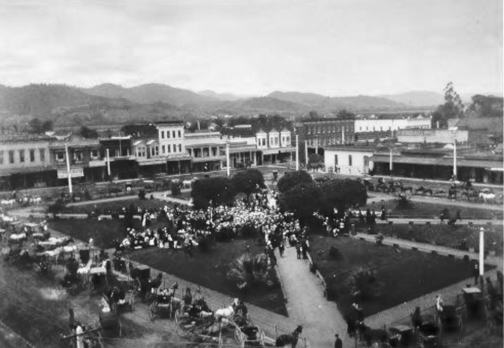
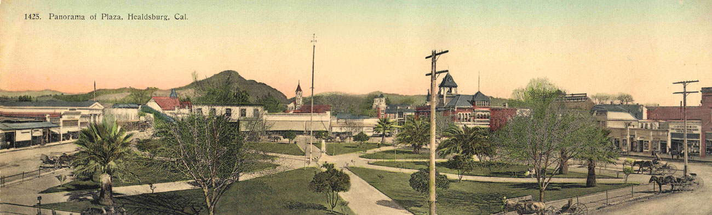

The Plaza
© 2020 Hannah Clayborn All Rights Reserved
|
Ka’le
Picture an ancient oak and madrone forest, sunlight casting dappled patterns on a ground of spiky, clumped grass. Nearby a small lake lies as calm as a green-tinted mirror. On the banks of this lake are a dozen or more rounded brush huts and the smoke from cooking fires spirals up along with the voices of playing children. A visitor to the site that we now call the Healdsburg Plaza might have seen this two hundred years ago. The Pomo Indian village of Ka’le sheltered in the ancient groves that once covered a large part of the Russian River Valley. The lake, which once extended south from the present Matheson Street. According to anthropologist Samuel A. Barrett: Ka'le, from aka, water, and le or lī, place. The plaza in Healdsburg now occupies the site of this old village. Immediately south of this site there was formerly a small lake which gave the village its name.(1) A very similar Pomo word, kale’, means tree, which could also have described this ancient forest.(2) Acorns from the many oaks, nuts from the black walnuts, seeds, berries, fish, and game were plentiful here, and life went on in traditional ways. The occasional visit of a European sailing vessel on the Coast from the early 1500's to the early 1800s, did not greatly change life here, although I wonder if such contact may have sparked epidemics that left no written record. The village would surely have been impacted when the Spanish founded Mission Dolores in San Francisco in 1776, and later Mission San Rafael. The founding of Mission San Francisco de Solano in 1823, by a newly independent Mexico might have brought about its end. The Russians were generally on good terms with the Pomo, sometimes taking coastal Pomo women as wives, and carrying on considerable trade with many of the family groups. This was due in part to the fact that the Russians, who relied on their indentured or enslaved Alaskan natives, did not need the California tribes for labor until their last years in California. The encounters with the Mission fathers and the Spanish and Mexican soldiers sent to protect them were often not friendly, as the soldiers kidnapped the local tribes if they could not recruit them, to use as laborers to construct their buildings and toil in their mission fields. Armed retaliatory raids against the local tribelets who resisted or challenged them took a terrible toll. The single greatest tragedy for the indigenous people came simply because of contact with Russians, Europeans, and Americans, who were hosts to powerful foreign diseases which they introduced to these unprotected people. By the 1840s these combined forces had wiped out the peaceful village of Ka’le, which once covered most of the Plaza and the area immediately west.(3)  Pomo Village, created for National Geographic Society, painting by W. Langdon Kihn, 1945.
Grizzly Hanging and Settlers’ Funeral
The oak and madrone forest that shaded Ka’le was still there in 1841 when the area became part of the more than 48,800-acre Rancho Sotoyome, granted to Captain Henry Delano Fitch. Town legend holds that Cyrus Alexander, who managed the cattle ranch for Fitch, used one very large madrone tree near the Plaza site to hang the carcass of a grizzly bear he killed there in the early 1840s.(4) Harmon Heald picked a spot near the current Plaza in 1851 when he built his first little squatter's cabin. He was looking for a sunny, but protected spot out of the dank gloom of the redwoods to recover from the illnesses he contracted on the journey across the plains. An early settler at Heald's Store, as it was known in 1856, described the Plaza site as a beautiful shady grove.(5) When Harmon Heald's wife, Sarah, died in 1857, the funeral was held outdoors on the Plaza, since no structure in the new town was large enough to hold it. One who attended that funeral described the Plaza as covered with large oaks with but one or two madronnas.(6) Although it is difficult to identify all of the native species of trees that once shaded the Plaza and town site, photographs from 1864 to 1873 suggest that it was covered with Pacific madrone, black oak, Valley oak, Coast live oak, and black walnut. The native people may have transplanted the black walnut to their village site. All of the early settlers describe the trees, and for the first 16 years of its existence, as one settler remembered, The Plaza in those days was used entirely as a hitching place for teams. It was filled with oak trees and tie racks.(7) 
Plaza Tree Immortalized
One huge and ancient madrone that stood on the northwest corner of the Plaza was impressive enough to be sketched by writer and artist, Albert Deane Richardson, author of Beyond the Mississippi, an account of his travels in the West from 1856 to 1869. In December 1865 he wrote: In the afternoon we reached Healdsburg, an agreeable village, shaded with live-oaks and madronas, or mountain laurels. Here the live oak attains perfection. I have seen no other tree so beautiful save the elm of the Connecticut valley. The madrona too, with its vivid green foliage, bright red stems and exquisite outline, is a marvel of grace and loveliness. One, in the principle street of the town, towering and spreading far above the highest buildings, is singularly picturesque and venerable. The boughs of all trees are richly festooned with great bunches of mistletoe.(8) No other small northern California town was so honored in his book, and the tree Richardson described in 1865 had been severely damaged by fire in 1859.(9) Like so many other famous visitors to Healdsburg in that era, Richardson was en route to the Geysers in Clark Foss’s stage. Heald laid out the town in 1857 in the common grid pattern pervasive throughout the West. But the focus of its streets on a plaza/park was somewhat unusual for northern California.(10) He was no doubt influenced by the old Mexican military parade ground and plaza in the nearby town of Sonoma. The name itself betrayed its Mexican origins, for it was never called a square or commons or park, as such places were known in East and Midwest, but was always referred to as the Plaza from 1857 on. 
Ancient madrone (imagine scarlet bark), on the northwest corner of the Plaza as described by Richardson in 1865. Legend has it that Cyrus Alexander hung a grizzly bear from its branches in the early 1840s. It was severely damaged in a downtown fire in 1859.
Pigs Are Prohibited
As the commercial center and population of the town grew, many trees were felled to make way for construction, but the Plaza trees were a remnant of the old forest. The first attempt to fence and protect these trees came as early as 1858, when a group of citizens surveyed the lot and made cost estimates before giving up the project.(11) The importance of a fence may not be as clear to us now, but in those days the Plaza was mainly used to hitch heavily laden wagons which made deep ruts in the earth and crushed the tender root systems of the native trees. Marauding livestock, most notably pigs, ran loose and wallowed in winter mud puddles. The very first city ordinance, in fact, in 1867 expressly prohibited all pigs from entering the Plaza. 
Russian River Flag, Volume I, Number 9, 14 January 1869(3)

Russian River Flag, Volume I, Number 10, 21 January 1869(3).
The Ancient Oaks Fall
The press had long advocated for those ancient native trees, and editorials calling for a plaza fence to protect and preserve them date to the early 1860s. The editor of one of the first town newspapers, A. J. Cox, penned a new verse to a popular 1837 song in The Review (1860–1863) on the occasion of some vandalism to a Plaza tree: Woodman, Woodman, spare that tree The glorious pride of Summer; That sheltered many an honest brow, And also many a bummer.(12) Fencing and improving the plaza was repeatedly included as one reason for incorporating the city in 1867, along with street improvements.(13) It is difficult to tell how many Plaza trees were damaged or removed between 1857 and 1868, but in the latter year the Russian River Flag editor protested, Many of the noble oaks on our plaza, which have long been the pride of citizens and the admiration of strangers, are dying for want of protection. Later the same editor declared, It is a shame that these trees remain unfenced to have the life trampled out of them by the constant travel of the streets...(14)  The unfenced Plaza as photographed by J.C. Downing in 1872. South St. (now Matheson) on the right. L.A. Norton's famous "Office" can be seen at the corner of South and Center Sts.(Sonoma County Library, from original at Healdsburg Museum)
 The newly fenced Plaza, as photographed by J.C. Downing in 1973, view from Center Street across to West St. (Healdsburg Ave.) (Sonoma County Library from original at Healdsburg Museum)
The Plaza was finally fenced in 1873 at a cost of $1,000. This first adornment was built of redwood with carved pickets and molded posts. Six gates gave access, one at each corner and one on the east and west sides. It was painted white. At the same time townsfolk plowed, harrowed, and filled the plaza with river-bottom loam hauled from the Russian River.(15) Ornamental shrubs, most likely herbs, were planted among the native trees, along with at least one fruit tree.(16)
Yet by 1873 the attitude towards the old forest trees had changed. Now a group of citizens called for the removal of the trees, thinned and strangled by decades of abuse. They must have met with opposition, however, for the first City Council order to sell the old trees to the highest bidder for removal in April of that year was rescinded one month later. Finally, a citizens' petition forced the removal of the last of the ancient oaks in March of 1874.(17) A bitter Russian River Flag editor, who had defended the oaks for years, noted: The last of the plaza trees—the two that stood at the southeast corner—were cut down this week. It is some comfort to know that by the time the trees lately planted in the plaza are large enough to make much firewood, the most of the vandals who have favored the destruction of our plazas oak grove will have ceased to be troubled with worldly matters.(18) Many years later in 1896, Joseph Stewart of Duncan’s Mills reminisced to a reporter about his time in Healdsburg during its first 25 years. He served as the first street commissioner, salaried night watchman, and clerk of the board of health. During his 14 years as street commissioner, he took credit for transforming the…weird aspect of the wooded grove in the center of the business quarter to what has been properly termed a plaza. It was he who felled the struggling ancient Plaza trees and also those that stood in the streets now known as Plaza, Center, and Matheson Streets and Healdsburg Avenue.(19)  Winter snow on the Plaza, late 1873 or early 1874.
Citizens Invited to Plant
Now that it was cleared for improvement, the Council invited all interested citizens to plant trees and shrubs in the Plaza, which they did, seemingly at random. The Russian River Flag editor, who never really got over the loss of the forest trees, complained: Several paths, looking like Modoc trails cross the public plaza in different directions. Those crossing the plaza are compelled to "single file." By 1876 the townsfolk had filled the plaza with tiny fir trees, cypress, and had bordered it with Eucalyptus (which they called Gum) trees. In the very center they planted exotic palms.(20) Although the firs were a native California touch, perhaps a remembrance of the journey over the Sierras, these plantings also exhibited the taste for the exotic that flourished in California during that era, especially the now ubiquitous Eucalyptus imported from Australia. The flagpole that had been erected during the Civil War to fly the Stars and Stripes, was finally removed in 1875, although other flagpoles continued to rise on other parts of the Plaza.(21) In 1878 the newspaper began to agitate for further beautification, including the planting of Kentucky blue grass, irrigation, and iron benches for visitors.(22) The unkempt appearance of the Plaza had an unfavorable effect on visitors, the paper claimed. Hard times following the economic "Panic" of 1873 delayed further work until late 1880, when the first structure on the site was designed. Bell Tower, a Painted Lady
In December 1880, the City of Healdsburg purchased a 778-pound bell from the Christian College in Santa Rosa. Immediately thereafter work began on a large enclosed bell tower in the center of the Plaza. The nearly completed "City Fire Tower" received the bell and tested its voice on January 6, 1881. It sounded loud and clear, serving for many years to call the volunteer fire brigade, gather townsfolk in emergencies, or ring out joyous news. (23) With its many trees, lacy fence, and now a lofty civic spire and bell as centerpiece, the citizens of Healdsburg seemed satisfied with their Plaza. Encircled by a row of Eucalyptus, the lot now supported approximately 35 cypress and fir trees in various stages of growth. Still, without regular maintenance the Plaza often looked unkempt. When the editor of the Healdsburg Enterprise called the Plaza an eyesore, a movement to clean it up began that was repeated annually. In 1888 one editor went so far as to rant: …Either improve it or set fire to the weeds, bell tower and everything belonging to it, and erect a dry goods box in its stead with this inscription, 'Sacred to the memory of what should have been a plaza.'(24)  Plaza with bell tower during the 1887 snowstorm. The Eucalyptus trees along Center and Matheson Streets were severely pruned to take this photo from the roof of the new City Hall. They would be removed two years later.
Party Plaza
With its central location, the Plaza was from inception a natural party place. Local businessmen were the first to recognize the advantage of such gatherings in a picturesque setting, conveniently encircled by their shops. In fact, until about 1910, concerts or political orations on the Plaza, parades around the Plaza, runaway horses, or traffic accidents on or near the Plaza seemingly made up a majority of the local news. After gas lights were installed in 1878, there was no longer a need for buckets of tar to light the night. The gas lights would be replaced by electrical lighting in 1903.(25) Fourth of July celebrations on the Plaza began at least as early as 1866. A reported crowd of 2,000 gathered in that year to hear political orations, to watch the parade, and later enjoy evening pyrotechnics. In 1877 a May Day Festival was re-established, centered on the Plaza. This first festival featured a Knighthood Tournament, wherein mounted riders tried to spear brass rings with seven-foot lances while galloping at high speeds. By 1879 the event was drawing close to 5,000 people, almost three times the population of the town. One of the main events was always the coronation of the Queen of the May and her attendants on the Plaza. As each year built upon the last, the event grew more elaborate. In 1895 the festival was a three-day extravaganza with a mile-long parade around the Plaza. After 1896 the Floral Festival, as the May Day spectacular was known, was combined with the Independence Day celebration and the Floral Queen was replaced with the Goddess of Liberty after 1904. Large Fourth of July celebrations on the Plaza ended in 1904. Plaza festivals or "land carnivals" as they were referred to in the press, gave way to the lure of the Russian River, and the Russian River Fiesta, later called the Healdsburg Water Carnival focused on Sotoyome Lake, now known as Memorial Beach.(26)  Bell tower decorated for the 1895 Floral Festival. The coronation of the Queen is taking place on the bandstand to the left. (Sonoma County Library)
Miss Bell Tower, Scorned by the Band
Regular band concerts on the Plaza were advertised as early as 1878, and as soon as a large Sotoyome Band became well established in the 1880s, the Plaza became its unofficial headquarters. The Plaza was a perfect location for regular seasonal Saturday night band concerts drawing people from far and wide. Unlike the expensive festivals, the concerts were economical. They cost next to nothing and admission was free. They brought trade for local business because shops stayed open until 9 p.m. on those nights. The concerts also provided much needed entertainment and social opportunities. For years citizens requested a permanent bandstand, to replace a temporary one constructed annually next to the bell tower. But in 1895 a concerted movement for civic improvement began in Healdsburg. This movement, which in other spheres resulted in a municipally owned water and electric plant, had a dramatic impact on the Plaza, and pushed the question of the band concerts to the forefront. It all started with agitation by the local newspaper and citizens beginning in April 1895, resulting in the destruction of old "Miss Bell Tower" in 1896. Barely 15 years old, she was now considered an eyesore and was accused of causing false fire alarms with her rickety frame in high winds.(27) A new circular bandstand appeared in her place, a gazebo-like structure with a conical roof built upon the old bell tower legs. Following the ornate, but airy styles of that era, it included open banister work, fancy brackets and cornices, and a "swaying staircase".(28) This whimsical Victorian bandstand soon became a favorite gathering place, especially for young single men and women who would assemble on warm evenings after chores were done.(29) Lady Imps Ignite Firestorm
Perhaps it was the popularity of the gazebo bandstand as a magnet for socializing, and the ever-increasing fame of the Saturday night concerts, which led to its controversial downfall only three years later. Those concerts inevitably involved the consumption of liquor, either in nearby saloons or from pocket flasks. One aspect of the progressive spirit that seized the town included the Temperance Movement to ban the use of alcohol. Following the lead of Temperance Leagues throughout California, a local group, the Ladies Improvement Club, received permission from the City Trustees to replace the bandstand, a temple of iniquity in their view, with a central drinking fountain. Such civic water fountains had been installed in many towns as a symbol of the determination to outlaw alcohol. Many of the women in the Improvement Club had been members of an earlier group, the Albanian Literary and Military Society, who had donated money to improve the Plaza, namely giving money to level the site in 1888.(30) A drinking fountain could have been placed almost anywhere on the Plaza, but the "Lady Imps" as they were known to some, were set upon the destruction of the bandstand and its unsavory influence. They ignited a firestorm of controversy by proposing the removal of the town's favorite gathering place. The City Trustees, caught in the middle of this passionate debate, typically became mired in indecision. When a citizens' petition began to circulate to save the bandstand, the Ladies Improvement Club, intent upon their Higher Purpose, had the bandstand hurriedly axed down. This rash action started a year-long battle between community factions, played out on the Plaza, in the newspapers, and at City Trustee meetings. 
The Quiet before the Storm: the Plaza Gazebo, only three years old, has been axed down by agents of the Ladies Improvement Club. A muslin monument with "indecent" graffiti would soon appear here in April 1900. (Sonoma County Library)
Hoodlums Scrawl Indecent Graffiti
On April 12, 1900 the Healdsburg Tribune reported that a group of young people had played a hoax on the "Lady Imps". In the dark of night they erected a fake marble monument in the center of the Plaza, built out of wood with muslin stretched over it. The newspaper fumed over the "indecent" graffiti that was scrawled upon the thing, stating, The sentiments expressed on the monument were worthy of Barbary Coast hoodlums. The Ladies Improvement Club, determined to have their symbolic drinking fountain, would not be swayed. The young people and most shop owners wanted a bandstand. Some businessmen wanted something else altogether, suggesting an elaborate electric fountain, consisting of large sprays of water lit by multi-colored lights. This idea was inspired by an exhibit at the 1894 California Midwinter Exposition in San Francisco. Although expensive, such a spectacular display might draw out-of-towners, they reasoned, and be good for business. The Plaza became the visible battleground for a war waged between competing community values and interests. With the help of an attorney, the Ladies Improvement Club finally prevailed over all, and the drinking fountain was dedicated with a community event on May 1, 1901. Not conceding defeat however, the rest of the community immediately erected a temporary bandstand right next to the fountain, which was succeeded by a permanent one donated by local businessmen in 1915.(31) By that time the “Lady Imps” may have lost some of their political power, but the Temperance movement would return and have a massive impact on the local and national economy. Meanwhile, the band played on.  Dedication of the Plaza Monument Drinking Fountain, May 1, 1901. (Sonoma County Library)

The Quintessential Victorian Plaza: the Ladies Improvement Club Monument Drinking Fountain, summer bandstand, "umbrella" trees, Canary Island Date Palms, and iron benches, circa 1905. (Sonoma County Library)
Landscaping Fads
Landscaping fads visited the Plaza regularly in its early years. What was once thought elegant or ornamental was a decade later often reviled. The messy Eucalyptus trees were removed in 1889. In 1895 Plaza gardener Joseph Silvia came up with an idea to tame the wild cypress trees by meticulously trimming them to what one editor called "a shape of evenness and symmetry." Photographs of the time show small, widely-spaced toadstools in an otherwise bare Plaza. This mystifying manifestation can be explained by the popularity of sculptured, uncluttered Italianate formal gardens in Europe in an earlier era, one that Silvia may have remembered fondly.(32) The Plaza soon evolved from the stiff formality of the toadstool park to a more relaxed, naturalistic style. Replacing the heavy picket and post perimeter fence with a wire mesh fence extended the feeling of open space. Near the end of the last century businessmen and developers in Southern California began to promote the state as a tropical paradise. Healdsburg officials were probably emulating that movement in 1897 when they removed the cypress trees and planted the Plaza with "umbrella trees", exotic Canary Island Date Palms, Washington Palms, orange and lemon trees, and a profusion of rose bushes. Wrought iron benches donated by the Healdsburg Benevolent Society in 1899 completed the quintessential Victorian Plaza. The umbrella trees (whatever they were), never very sturdy, blew down in a storm in 1907. They were replaced by four elm and four maple trees.(33) As the native redwoods receded on surrounding hilltops and became a symbol of the vanishing Western wilderness, they were added as an ornament to the park. Some were planted as early as 1900. One of the species is a rare deciduous variety from China known as the "Dawn Redwood", once thought to be extinct. Modern innovation continued to visit the Plaza. The rusty tin cup at the drinking fountain monument was replaced in 1912 by two "sanitary fountains" to cut down on "microbes". The next year the streets surrounding the Plaza were paved, cutting down considerably on dust raised by the influx of automobiles. In 1915 the hitching posts for horses on the Plaza were removed and equines had to find other places to wait for their old-fashioned owners. It became a sport for a number of years thereafter to count and compare the number of automobiles surrounding the Plaza during various events, starting in 1913, when there were 179 internal combustion engines surrounding the Plaza for a Saturday night summer band concert. By1918 parallel parking perpendicular to the curb was mandatory around the Plaza.(34) Aside from those innovations, the marble drinking fountain, palms, and bandstand appear on postcard after postcard, decade after decade, distinguishable only by the increasing height of the trees and the changing backdrop of downtown buildings for another half century. 
The meticulous manicuring of Plaza cypress trees by groundskeeper Joseph Silvia created a sculptured topiary in 1895. Note the bandstand next to the bell tower.
Soap Box Stop
Although the winds of change abated on the Plaza after 1900, it continued to figure ever more prominently in the social and political life of the area. From the beginning the Plaza served as a focus of state and regional politics. It was a strategic stopping place for soap box orators and campaigning politicians, drawing gubernatorial candidates or governors in 1898, 1902, 1910, 1917, and 1928. Large rallies or debates boomed from the park in almost every state and national election year until the 1930s, when radio cut into the popularity of the public speaking circuit. One especially charming custom after national elections was the Democratic and Republican party triumphal wheelbarrow ride around the Plaza. The winning party would build celebratory bonfires at the four corners of the Plaza and set off fireworks. A prominent member of the losing party conveyed a prominent member of the triumphant party around the Plaza in a wheelbarrow, amidst the Huzzahs of the assembled citizens.(35) The Plaza Saturday night band concerts, an entrenched local institution, drew large crowds until the 1950s. After surviving the onslaught of the Ladies Improvement Club, the band played on through wars and economic downturns. The concerts finally surrendered in the 1950s to that revolutionary new invention, the television. If local families could watch The Honeymooners or Gunsmoke, they no longer needed to meet their neighbors on Saturday night or sway to the rhythms of Owen Sweeten and his Orchestra. Beginning in the 1980s occasional seasonal band concerts returned. Rethinking the Plaza
In 1960 the winds of civic improvement and modernization, led by City Manager, Edwin Langhart, once again swept through Healdsburg. At the same time that the three-story romantic Romanesque 1886 City Hall was demolished, and a simple, single-story city hall and fire station were under construction, attention turned to the Plaza. A landscape planner, Burton Litton of Berkeley, was hired in that year to rethink the park. His plan, along with the older Canary Island Date Palms and redwoods remain. At the same time Elmer J. Sandborn donated $1,000 for a new public fountain in the center of the Plaza. The Ladies Improvement Club’s granite drinking fountain/monument that had caused so much furor and consternation in 1900, surrendered to demolition without a struggle sixty years later. A simple, low-profile, rectangular modernistic fountain that matched the aesthetic of the new city hall replaced it. In the early 2000s the aging fountain was boarded up, and a bench-type structure that formed the focal point of the town park often puzzled visitors. Nothing of note was added to the Plaza for the next generation until the Plaza Pavilion was dedicated September 6, 1986. So as not to disturb the Elmer J. Sandborn Memorial Fountain, the Pavilion was built on the east end of the park. Designed by local architect Michael A. Rubenstein, its airy Post-modernist style faintly echoed the short-lived 1897 gazebo bandstand, although it pointedly avoided that term. Nevertheless it eventually shared a similar fate. It is difficult to determine what the original parameters of the 1986 Plaza Pavilion had been, or what the original designer intended, but very public complaints about the practicality of its size and usefulness as a stage for bands or orchestras began in 1990, at about the time of Rubenstein’s death. Too small to accommodate more than a few musicians, temporary awnings and stages were put up for Plaza festivals through the 1990s and early 2000s. Ray Holley, a local newspaper columnist spearheaded a community effort that resulted in a new stage, once again called the Gazebo, in 2007. According to the local press, the project was completed with only volunteer donations and labor. No architect is noted for the composite style whose shape recalls Santa Rosa’s Fountaingrove Round Barn, recently destroyed in the Tubbs fire, but does not copy that landmark’s simplicity. Some ornamentation seems Victorian, but the substantial structural elements are contemporary. Gazebo II reportedly cost $100,000 to build and boasts a copper roof. At 1,000 square feet, it works well as a stage for gatherings and community events.(36) Over the course of its history the Plaza reflected a consensus of taste and morality in Healdsburg. It has also reflected the fiery debates needed to reach that consensus. We can thank town founder, Harmon Heald, for donating that hospitable plot of land whose slowly evolving adornment has attracted so many generations of admirers.
|

circa 1910
|
Endnotes
1. S.A. Barrett, The Ethno-geography of the Pomo and Neighboring Indians, 1908, The Bancroft Library, University of California, Berkeley, p. 218. 2. Ibid. Pomo kale’ meaning tree: pgs. 135,150, 154, 158, 165, 189, 190, 199, 200, 201,213, word lists pgs. 61, 323. 3. Fredrickson, Vera Mae, et al., Mihilakawna and Makahmo Pomo, People of Lake Sonoma. 7 12, 48-54. Peri et al, The Makahmo Pomo: An Ethnographic Survey of the Cloverdale (Makahmo) Pomo, 15 – 19. Ferguson, Ruby Alta, Historical Development of the Russian River Valley 1597 – 1865; thesis, UC Berkeley, 1931 (Healdsburg Museum). pgs. 36 – 40, 45, 46, 48 – 51. Oswalt , Robert L. Southern Pomo word list and map of native place names in the Warm Springs Dam Area, 1981, p. 18. 4. Russian River Flag, 13 March 1873 (3:4). Alexander, The Life and Times of Cyrus Alexander, pgs. 39–58. 5. For more information on this subject see The Heald Family and the Town of Healdsburg on this site. Heald, The Heald Family and the Birth of a Town; 10, 11. 6. Heald, The Heald Family Who Settled Healdsburg, 10, 11 (Healdsburg Museum). “Interview with Aunt Jennie Smith”, from the notes of W.T. Heald, Healdsburg Museum. 7. O.L. White quoted in: Healdsburg Tribune, Enterprise and Scimitar, Volume XXXI, Number 19, 25 July 1918(5). 8. Richardson, Albert D., Beyond the Mississippi, American Pub. Co.:Hartford, CT, 1869, 519, 521. 9. The Review newspaper, Healdsburg Museum Archives. Also described in: Reminscenses—Healdsburg in 1857, Russian River Flag, Volume V, Number 18, 13 March 1873 (3:3). Note: these newspapers give the year of the downtown fire as 1860; a published county history gives the date of the fire as 1859: J.F. Munro-Fraser, History of Sonoma County, Alley Bowen Co., 1880, 219. 10. Jackson, American Space, the Centennial Years, 1865-1876, 181-194. 11. Russian River Flag 13 March 1873 (3:4). 12. The Review, newspaper, Healdsburg Museum Archives. Also as described in: Russian River Flag, Volume V, Number 18, 13 March 1873. Russian River Flag, Volume I, Number 25, 21 March 1866(3). For more about the 1837 song, Woodman, Woodman, Spare that Tree see: https://www.youtube.com/watch?v=MjyD5wZjZ-U. 13. Russian River Flag, Volume II, Number 12, 19 December 1866 (3). Russian River Flag, Volume II, Number 15, 10 January 1867 (3). 14. Russian River Flag, newspaper , 19 November 1868(3:1.) 15. Russian River Flag, 9 January 1873, 3:1; 16 January 1873, 3:2. 16. Photo of Plaza, Nov. 1873, view west from Center to West Streets., Healdsburg Museum. Russian River Flag, Volume VI, Number 10, 15 January 1874(3). 17. Russian River Flag 20 March 1873 (3). Healdsburg Enterprise, 7 April 1873, 1. Russian River Flag, 20 march 1873, 3:1. Healdsburg Board of Trustee Meeting, Minutes, 16 March 1874. 18. Russian River Flag, Volume VI, Number 25, 30 April 1874(3). 19. Old trees removed: Russian River Flag 19 March 1874. Healdsburg Tribune, Enterprise and Scimitar, Volume XVIII, Number 15, 31 December 1896(8). 20. Photo, Healdsburg Plaza in snowstorm, view northwest from roof of City Hall at Matheson and Center Streets, 1887, Healdsburg Museum. Russian River Flag, Volume V, Number 29, 29 May 1873 (3:3). 21. Russian River Flag, Volume VII, Number 52, 4 November 1875(3). 22. Russian River Flag, newspaper, 6 June 1878, 3:3. Healdsburg Enterprise, 14 July 1878, 3:3. 23. Healdsburg Board of Trustees Meeting, Minutes, 1 November 1880, 6 December 1880. Russian River Flag, 6 January 1881 (3:2). 24. Healdsburg Enterprise, Volume XIII, Number 1, 30 May 1888. 25. Russian River Flag, Volume X, Number 46, 19 September 1878. Russian River Flag 26 September 1878. Healdsburg Enterprise, Volume XXVIII, Number 3, 4 July 1903(1). Healdsburg Enterprise, Volume XXVIII, Number 7, 1 August 1903 (1). 26. For more details on Plaza Festivals and references see Festivals and Parades on this site. 27. Healdsburg Enterprise, Volume XIV, Number 22, 23 October 1889(3). Russian River Flag, Volume VIII, Number 14, 10 February 1876(3). Healdsburg Tribune,4 April 1895 (8:5); 11 April 1895, 1:3; 9 April 1896, 1:1; 30 April 1896, 1:4. 28. Healdsburg Tribune, Enterprise and Scimitar, Volume XVII, Number 7, 7 May 1896(8). Healdsburg Tribune 11 February 1897, 1:3; 22 April 1897 (1:4). 29. Healdsburg Tribune, 19 April 1900 (6:1). 30. Healdsburg Enterprise, Volume XIII, Number 29, 12 December 1888 (3). 31. Healdsburg Tribune 11 January 1900 (8:2); 18 January 1900 (1); 15 March 1900 (1); 22 March 1900 (1:2); 29 March, 1900 (1:2); 5 April 1900 (1); 12 April, 1900 (1:2); 19 April 1900 (1:3) and (6); 26 April, 1900 (7; 3); May 1900 (4:1); 10 May 1900(1:1); 17 May 1900 (1:1); 24 May 1900 (1:2); 5 July 1900 (1). Healdsburg Tribune, Enterprise and Scimitar, Volume XXV, Number 22, 6 September 1900 (1); 20 September 1900 (1:4). Healdsburg Tribune, Enterprise and Scimitar, Volume XXVI, Number 2, 18 April 1901(1); 2 May 1901 (1:1); 9 May 1901 (1); 17 May 1901 (1:1); 23 May 1901 (7); 24 May 1901 (1:2). Healdsburg Enterprise 5 June 1915 (1:2). 32. Photo: Healdsburg Plaza, view northwest from roof of City Hall, Center and Matheson Streets, 1892, Healdsburg Museum. Healdsburg Enterprise, Volume XIV, Number 30, 18 December 1889 (3). Healdsburg Tribune, Enterprise and Scimitar, Volume XIV, Number 20, 31 January 1895 (3). 33. Photos: Healdsburg Plaza, view from drinking fountain to City Hall, corner of Center and Matheson Streets, 1905. Healdsburg Plaza, view southeast from corner of West Street and Plaza Streets, 1905. Healdsburg Plaza, postcard, view east from West Street towards Center Street, circa 1908, Healdsburg Museum. Healdsburg Enterprise, Volume XIV, Number 25, 13 November 1889 (3). Healdsburg Tribune, Enterprise and Scimitar, Volume XVIII, Number 21, 11 February 1897 (1). Healdsburg Tribune, Enterprise and Scimitar, Volume XVIII, Number 24, 4 March 1897 (1). Healdsburg Tribune, Enterprise and Scimitar, Volume XIX, Number 3, 8 April 1897 (1). Healdsburg Tribune, Enterprise and Scimitar, Volume XXIII, Number 16, 20 July 1899 (4). Healdsburg Tribune, Enterprise and Scimitar, Volume XVIII, Number 50, 7 March 1907 (1). 34. Healdsburg Enterprise, Volume XXVIII, Number 40, 12 March 1904 (1). Healdsburg Tribune, Enterprise and Scimitar 4 May 1910. Healdsburg Tribune, Enterprise and Scimitar, Volume XXV, Number 38, 28 November 1912 (1). Healdsburg Tribune, Enterprise and Scimitar, Volume XXVI, Number 18, 10 July 1913 (3). Healdsburg Tribune, Enterprise and Scimitar, Volume XXVI, Number 27, 11 September 1913 (1). Healdsburg Tribune, Enterprise and Scimitar 18 June 1914. Healdsburg Tribune, Enterprise and Scimitar, Volume XXVIII, Number 2, 8 April 1915 (1). Healdsburg Tribune, Enterprise and Scimitar 24 June 1915. Healdsburg Tribune, Enterprise and Scimitar, Volume XXVIII, Number 23, 16 September 1915 (1). Healdsburg Tribune, Enterprise and Scimitar, Volume XXVIII, Number 33, 25 November 1915 (3). Healdsburg Tribune, Enterprise and Scimitar, Volume XXXI, Number 24, 29 August 1918 (8). Healdsburg Tribune, Enterprise and Scimitar, Volume XXXII, Number 12, 19 June 1919 (1). 35. Healdsburg Enterprise, 31 October 1888 (3:4); 14 November 1888 (1:1); 27 October 1906 (4:4). Healdsburg Tribune 27 October 1898 (1:1); 30 October 1902 (1:1); 2 November 1910 (1:3); 18 August 1917 (1:1); 1 November 1928 (1:1). 36. Healdsburg Tribune, Enterprise and Scimitar, Number 30, 7 April 1960 (1). Healdsburg Tribune, Enterprise and Scimitar, Number 87, 3 September 1986. Healdsburg Tribune, Enterprise and Scimitar, Number 8, 31 October 1990. The Press Democrat 5 May 2007. |